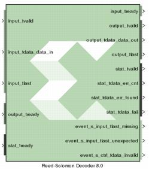

|
|
The Reed-Solomon (RS) codes are block-based error correcting codes with a wide range of applications in digital communications and storage.They are used to correct errors in many systems such as digital storage devices, wireless/ mobile communications, and digital video broadcasting.The Reed-Solomon decoder processes blocks generated by a Reed-Solomon encoder, attempting to correct errors and recover information symbols. The number and type of errors that can be corrected depend on the characteristics of the code.Reed-Solomon codes are Bose-Chaudhuri-Hocquenghem (BCH) codes, which in turn are linear block codes. An (n,k) linear block code is a k-dimensional sub-space of an n-dimensional vector space over a finite field. Elements of the field are called symbols. For a Reed-Solomon code, n ordinarily is 2s-1, where s is the width in bits of each symbol. When the code is shortened, n is smaller. The decoder handles both full length and shortened codes. It is also able to handle erasures, that is, symbols that are known with high probability to contain errors.
Common Options in Block Parameter Dialog Boxes.
V8.0